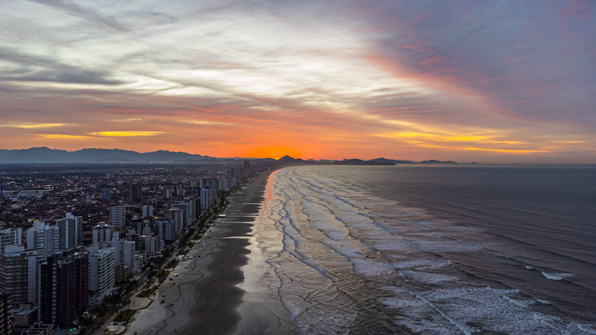

Orla da Praia
A extensa orla de Praia Grande é o cartão-postal da cidade, com calçadão revitalizado, quiosques, ciclovia e jardins bem cuidados. Perfeita para caminhadas, esportes e contemplar o pôr do sol.
📍 Avenida Pres. Castelo Branco (Canto do Forte até Solemar)